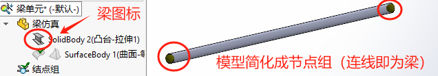
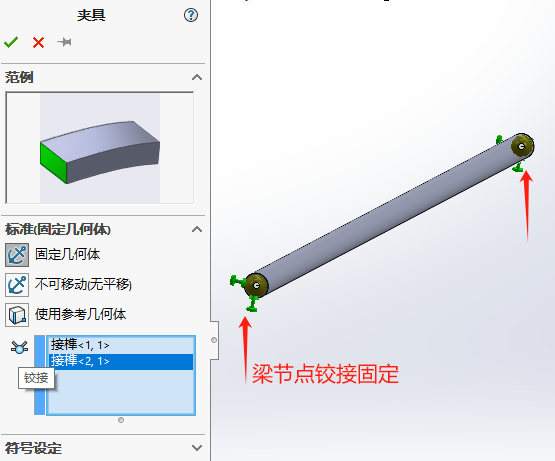
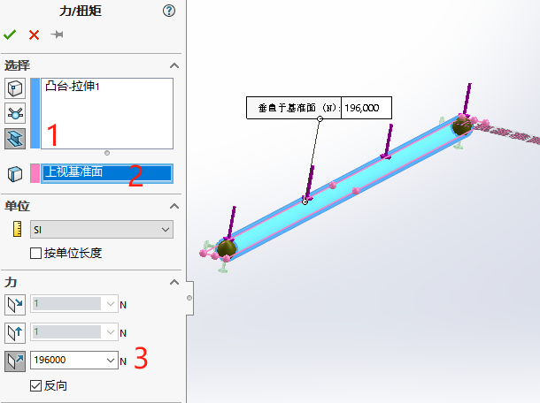
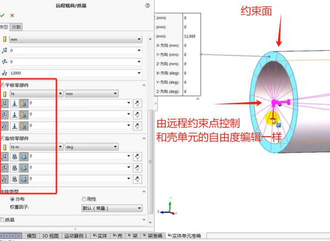

Simulation-教程7梁单元
梁单元横梁和桁架
横梁结点
每个横梁的端点有6个自由度，对这6个自由度进行约束及释放能够代表各式各样的连接情形。
o 刚性：所有自由度都约束于接合处。把所有力和力矩从横梁单元传递到接合上。
o 铰链：端点可自由旋转，不转移任何力矩到接合处
o 滑动：端点可自由平移，不转移任何力到接合处
o 手动：生成一个用户定义的连接类型
创建梁单元
焊接件格式会自动按“梁单元”处理。
如果有短的梁单元可能会提示“不能当作梁单元处理”，这里可以选择忽略。
如果有不能生成梁单元的实体，可能会是微小片体，不具备梁的基本截面形状，这里可以选择删除处理。
夹具约束
外部载荷
结果
横梁应力
均匀轴应力 = P/A
均匀抗剪应力 = V/A
折弯动量 M 产生了随与中性轴之间的垂直距离 y 线性变化的轴应力。
折弯应力 (y) = My/I
o 其中 I 是指中性轴的惯性矩。

总结
结构构件又薄又长，所以采用了横梁单元。这样极大地简化了分析，并缩短了计算求解时间。
模型准备包含横梁单元及接点定义步骤，这两步都是在 SolidWorks Simulation中自动完成的。这些自动生成的接点有时需要进行手工编辑，在本章练习了这种手工编辑步骤。
如果任意生成的两个接点的距离相对其他接点太近，则可以合并它们。因为横梁单元在每个末端拥有6个自由度，存在多种横梁单元的连接类型。我们通常会在全局坐标系下显示这些位移分量(或自由度)。然而，在任何其他坐标系下也可以显示自由度。
相比壳单元的节点而言，由于实体单元的节点没有旋转自由度，尝试连接壳和实体单元会沿公共边产生一个预计之外的合叶。
为了对这个分析下最后的结论，有必要查看连接处的应力。由于横梁与壳体和实体之间连接的限制，软件无法在界面处得到准确的结果。运行只使用实体单元的模型，估计会更好地研究这些位置的应力。
典型梁结构
固定支梁结构
条件
$$
公式：\omega_c=5ql^4/384EI
$$
理论
简支梁结构
悬臂梁结构
其他
需要要借助【远程载荷/质量】来模拟梁单元约束的“节点”
Q&A
弯曲梁单元
对于弯曲梁单元，软件会将其处理成多端。
锥形梁单元
力矩方向
横梁图表。一个两端固定的横梁沿本地方向 1 承受均匀分布载荷的示例。软件将绘制方向 1 上的抗剪图解和关于方向 2 的力矩图。但是这里为什么是方向2？